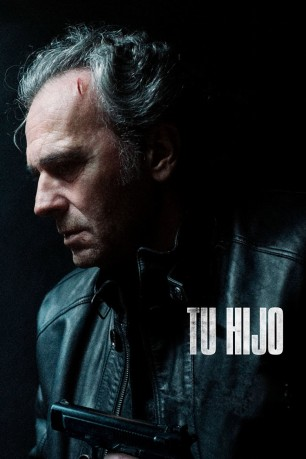
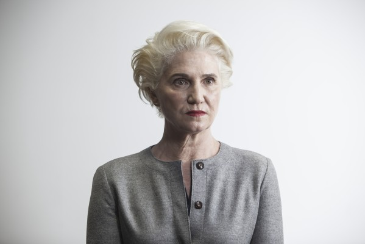
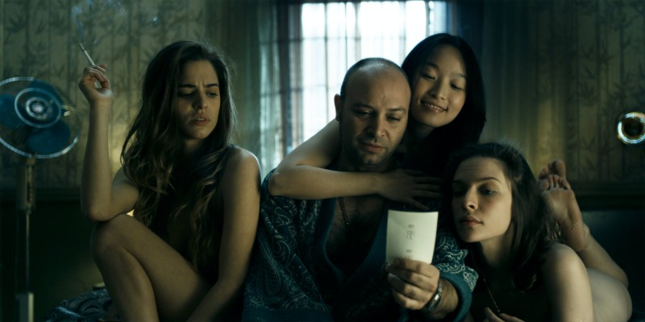

#11023 Tu hijo: Sohn der Vergeltung
Alternativ: Tu hijo (Englischer Titel)
 
 IMDB-Wertung: 6.1 / 10
IMDB-Wertung: 6.1 / 10  Metascore: 0
Metascore: 0 
Javier Jiménez is a successful doctor who lives in Sevilla (Andalucia, south to Spain) with his wife Carmen and his two teen children, older Marcos and elder Sara. His quiet daily life ends the night that Javier, while is working in the hospital, learns that an ambulance moved Marcos there after to receive a brutal beating up that it left him in coma. Broken by rage, pain and impotence, and seeing the low efforts of the police to find the aggressors, Javier starts secretly his own investigation, questioning Marcos' friend Pedro and Marcos' former girlfriend Andrea looking for answers about the identity of the suspects, and watching a discotheque's outsides where it happened. Discovering that one of aggressors is a teen nicknamed Albino by his dyed white-haired, who is son of Manolo, discotheque's owner, Javier tries to bring criminal evidences against Albino and his friends, but his good-heart intentions cause more troubles than help and Javier is arrested. Freed later on freedom ...
Jahr: 2018
Dauer: 103 Minuten
FSK:
Land: Spanien Studio: Entertainment OneTonspuren:
Untertitel: Englisch, Deutsch, , Französisch,
Auflösung: 1080p (1920x1080) Größe: 2693 MB
Genre: Drama
Regisseur: Miguel Ángel Vivas
Drehbuch: Alberto Marini, Miguel Ángel Vivas
Soundtrack: Fernando Vacas
Darsteller:
- Jose Coronado als Jaime Jiménez
-  Ana Wagener als Carmen
- Pol Monen als Marcos
- Ester Expósito als Andrea
- Marco H. Medina als Pedro
- Luis Bermejo als Manolo
-  Vicente Romero als Alberto
- Asia Ortega als Sara
- Gonzalo Hermoso als Albino
- Sergio Castellanos als Raúl
- Ramiro Alonso als Juan
- Paqui Montoya als María José
- José Blanco als Salva
- Marta Romero als María
- Sauce Ena als Inspectora Moreno
- Cris Nollet als Cirujano
- David Moreno als Anestesista
- Paco Sepúlveda als Enfermero
- Blas Castaño als Luis
- Carlos Urban als Policía Nacional
- Carmen Zuñiga als Chica discoteca
- Sara Ortiz als Chica discoteca
- Fernando Jariego als Chico discoteca
- Ismael Jiménez als Chico discoteca
- Luis Carrasco als Chico discoteca
- Miriam Roque als Chica discoteca
- Carolina Chaguaceda als Chica discoteca
- Rebeca Burguillo als Chica discoteca
- Maribel Barrado als Chica discoteca
- Víctor Callejas als Chico discoteca
Datei: X:\2018(N-Z)\Tu hijo Sohn der Vergeltung (2018, FSK, 1920x1080).mkv seit 18.04.2019
Festplatte: HD 2018(G-Z)-2019(A-Z)
 Es gibt insgesamt 172 Filme in der Gruppe '2018(N-Z)'
Es gibt insgesamt 172 Filme in der Gruppe '2018(N-Z)'